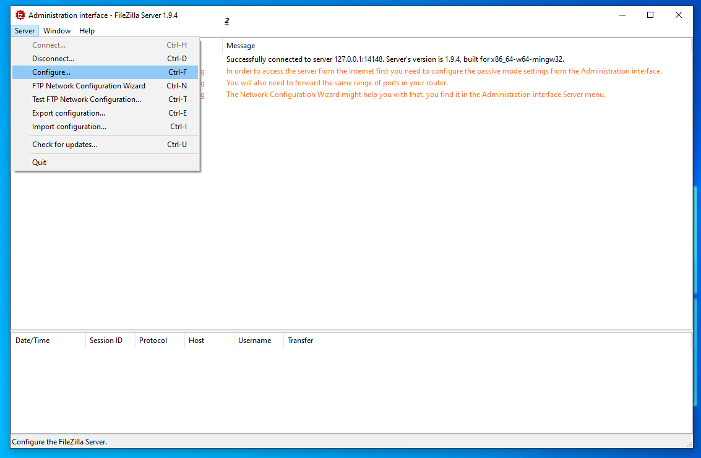
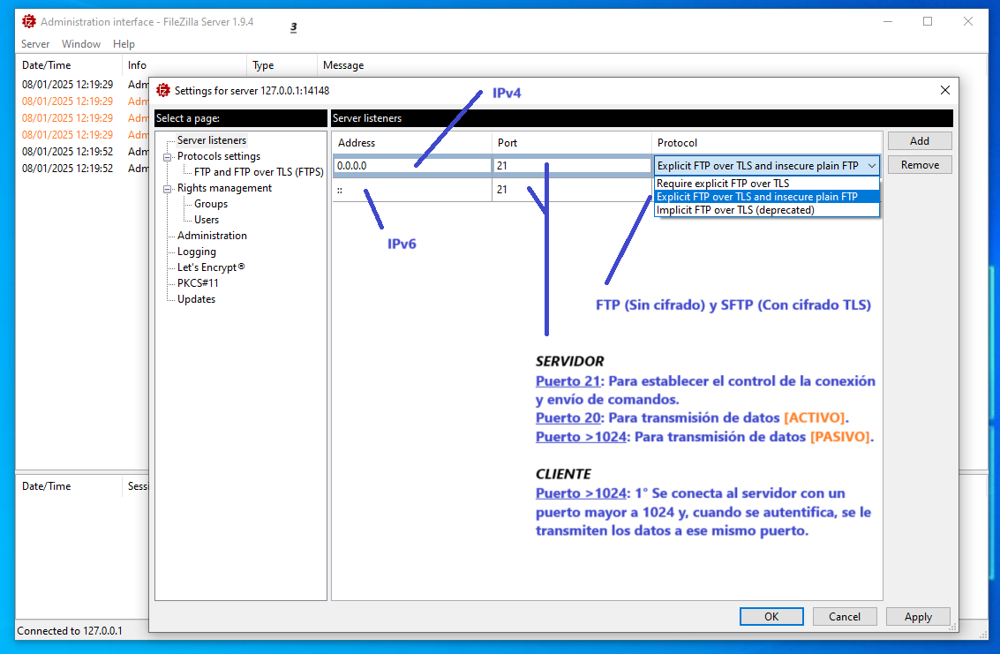
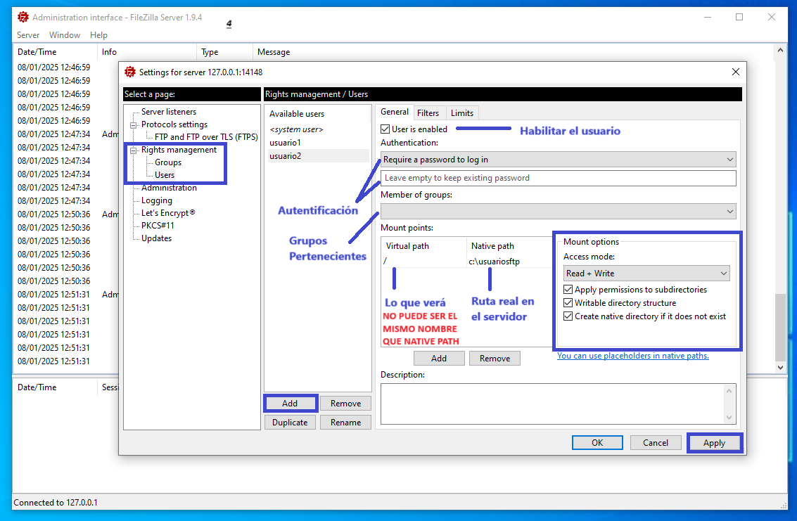
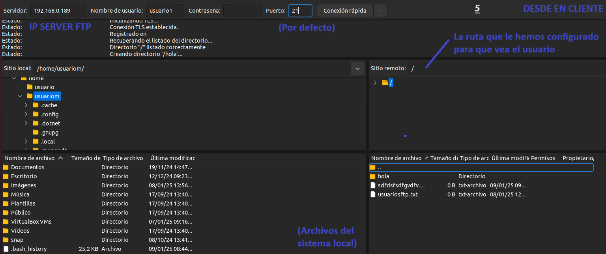
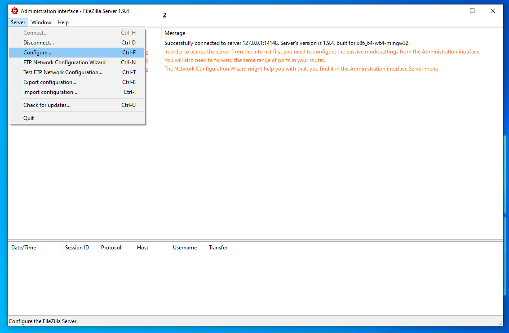
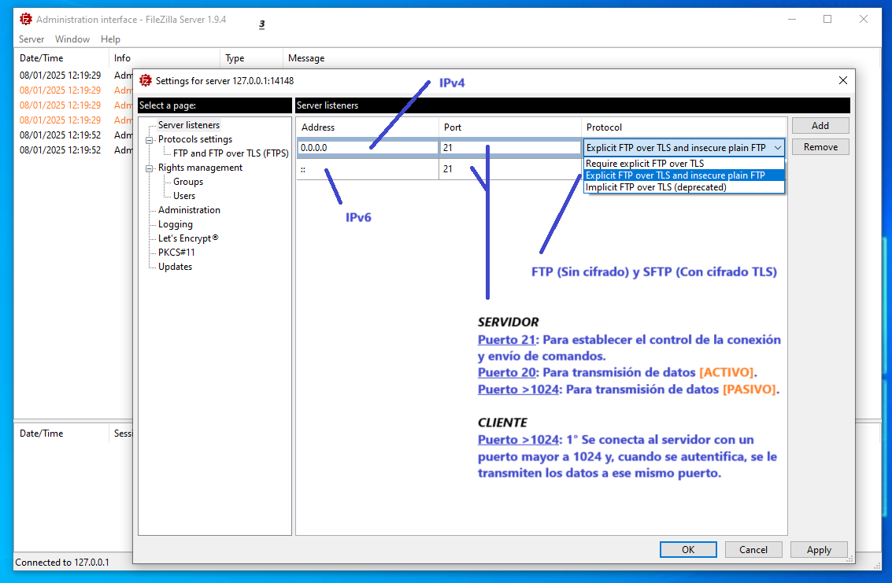
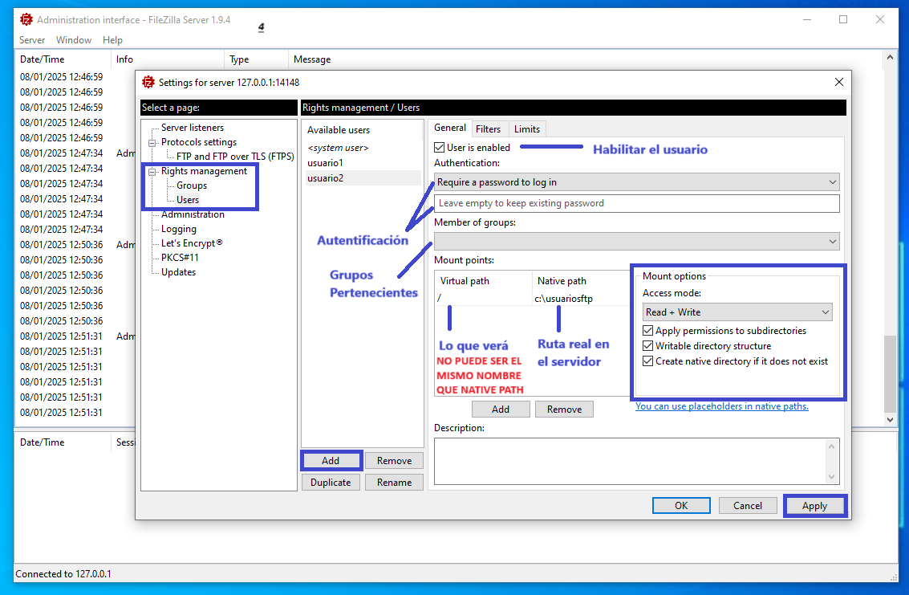
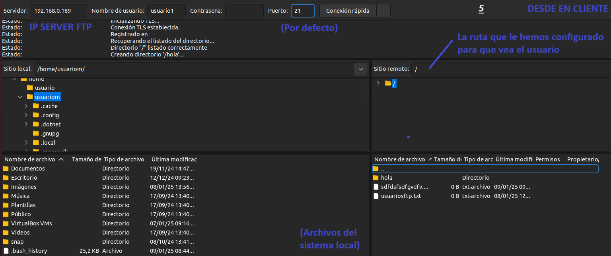

Instalación
apt-get update
apt-get install vsftpd
Al instalarlo se crea un usuario ftp automáticamente, que se incluye en el grupo ftp.
También crea el directorio /srv/ftp, que su propietario es root y su grupo ftp. Sirve como directorio para los usuarios anónimos.
Comprobación
Comprobar que tenemos el usuario y grupo ftp y que su directorio home es /srv/ftp:
cat /etc/passwd | grep ftp
cat /etc/group | grep ftp
ls /srv/ftp
Archivos importantes
Algunos de los siguientes archivos pueden no estar creados por defecto, en ese caso deberían crearse si se necesitan:
Servicio
Iniciar el servidor:
service vsftpd start
Comprobar el estado del servidor:
service vsftpd status
Directivas de:
/etc/vsftpd.conf
Activar los usuario anónimos: "ftp" o "anonymous". Su carpeta home será /srv/ftp, de solo lectura:
anonymous_enable=YES
Permite la conexión con usuarios del sistema. SU directorio será el que tenga como home en el sistema operativo. Pero por defecto no está enjaulado:
local_enable=YES
Permitir escritura:
write_enable=YES
Mensaje de bienvenida:
ftpd_banner=Mensaje con espacios
Enjaular Usuarios
Enjaular a todos los usuarios locales - /etc/vsftpd.conf:
chroot_local_user=YES
Enjaular a un usuario local específico - /etc/vsftpd.conf:
chroot_local_user=NO
chroot_list_enable=YES
chroot_list_file=/etc/vsftpd.chroot_list
/etc/vsftpd.chroot_list:
NombreUsuario1
NombreUsuario2
..
Ejemplo: Práctica 1
Meter 3 ficheros en "/srv/ftp".
1. Conectar con el usuario "ftp" y descargar un fichero al escritorio.
ftp [ip]
get [nombre_archivo] /home/[usuario]/Escritorio
2. Conectarme con un usuario creado "mortadelo" (adduser (user)) y comprobar:
Ejemplo: Práctica 2
Hacer un servidor con:
1. El mensaje de bienvenida sea "Bienvenido chema" - /etc/vsftpd.conf.
ftpd_banner=Bienvenido chema
2. Posibilidad de acceso con el usuario anónimo - /etc/vsftpd.conf:
anonymous_enable=YES
3. Permiso de lectura y escritura para 3 usuarios de Sistema:
chmod -R 777 /home/[USUARIO]
 






